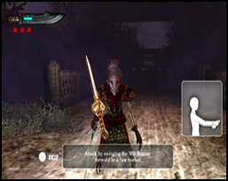

Cómo jugar
Este juego se juega utilizando el Wii Remote. Se aconseja el uso de Wii MotionPlus.
Funcionamiento de la pantalla de menú
Para seleccionar pestañas de opciones
Apunta a cualquier pestaña de opciones y pulsa el botón A para confirmar la selección.
Como alternativa, puedes utilizar la cruz de control para cambiar la selección y pulsar el botón A para confirmar.
Pulsa el botón B para volver al menú anterior (en caso aplicable).
Funcionamiento del juego
Puedes optar por jugar con o sin el Wii MotionPlus. Ten en cuenta que los controles variarán cuando utilices diferentes modos de juego.
Controles (Modo de funcionamiento con Wii MotionPlus)
Atacar: ataca a los enemigos moviendo rápidamente el Wii Remote en la dirección que quieres atacar.
La espada se moverá siguiendo el movimiento que hagas con el Wii Remote.
Defender: mantén pulsado el botón B para bloquear ataques, haz girar el Wii Remote para cambiar el ángulo de bloqueo.
Utilizar técnica especial: mantén pulsado el botón A y mueve rápidamente el Wii Remote para utilizar una técnica especial.
Existen dos tipos de técnicas especiales que varían en función de si la dirección del corte es vertical u horizontal.
Volver a calibrar
Si el Wii Remote / Wii MotionPlus no sigue correctamente tus movimientos, durante el juego pulsa el botón + para activar el menú pausa.
Selecciona la pestaña Recalibrate para volver a calibrar el Wii MotionPlus.
Controles (Modo de funcionamiento sin Wii MotionPlus)
Atacar: ataca al enemigo agitando el Wii Remote. Cambia el ángulo de ataque manteniendo pulsado el botón B y haciendo girar el Wii Remote.
Suelta el botón B antes de agitar para atacar.
Defender: mantén pulsado el botón B para bloquear ataques. Mantén pulsado el botón B y haz girar el Wii Remote para cambiar la dirección de la espada.
Utilizar técnica especial: mantén pulsado el botón A y agita el Wii Remote para utilizar una técnica especial.
Existen dos tipos de técnicas especiales que varían en función de si la dirección del corte es vertical u horizontal.
Tutorial

La partida de tutorial se juega al principio del nivel 1. El tutorial está disponible para los dos modos de control. (Con y sin Wii MotionPlus).